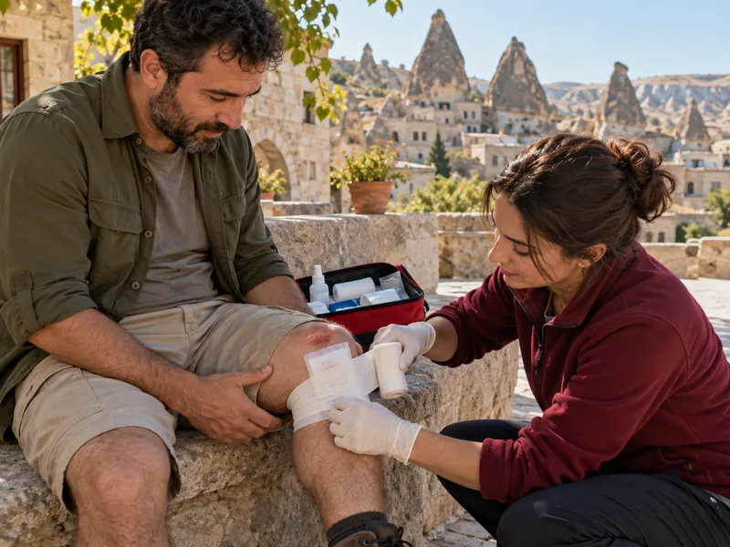

İlk YardımKonu 6 / 1022 çıkmış soru
Yaralar ve yaralanmalar
Yara türlerini ve genel yara bakımını, batan cisimleri, baş, göğüs ve karın yaralanmalarının belirtilerini ve ilk yardımını, uzuv kopmasını, göz, kulak ve burna yabancı cisim kaçmasını ve hayvan ısırıklarını kapsar.

1Konu anlatımı
Akılda kalsın
- Nakilden önce yara temiz bir bezle kapatılır ve yaralı bölge sabitlenir; yaraya pamuk konmaz, merhem, tentürdiyot veya alkol sürülmez.
- Kesik yaralarda yara kenarları birbirine yaklaştırılıp sarılır; açık yarada kanama varsa şoka karşı önlem alınır.
- Yaraya batmış cisim çıkarılmaz; çevresi desteklenerek sabitlenir ve yaralı hastaneye sevk edilir.
- Baş yaralanmasında burun ve kulaktan kan ya da sıvı gelmesi, göz bebeklerinde büyüklük farkı, hafıza kaybı ve kusma görülebilir; solunum yolu açık tutularak sevk edilir.
- Baş yaralanması nedeniyle bayılıp kendine gelen kişi en az 12–24 saat hekim kontrolünde tutulur.
- Öksürükle ağızdan açık kırmızı, köpüklü kan gelmesi akciğer yaralanmasını gösterir; delici göğüs yarası olan kazazede bilinci açıksa yarı oturur duruma getirilir.
- Karın yaralanmasında ağızdan yiyecek ya da içecek verilmez; kopan uzuv beze sarılıp torbaya konur, bu torba buzlu su bulunan ikinci bir torbaya yerleştirilir.
Yara türleri
Yara, deri ya da mukozanın bütünlüğünün bozulmasıdır. Oluş şekline göre başlıca yara türleri şunlardır:
- Kesik yaralar: Bıçak, cam gibi keskin cisimlerle oluşur; kenarları düzgündür, kanama fazla olabilir.
- Delici-batıcı yaralar: Çivi, şiş, bıçak ucu gibi cisimlerle oluşur; dışarıdan küçük görünse de derindeki dokular ve organlar zarar görmüş olabilir.
- Ezikli ve parçalı yaralar: Darbe ve çarpmalarla oluşur; kenarları düzensizdir, doku kaybı olabilir.
- Sıyrıklar: Derinin yüzeyinin kazınmasıyla oluşur; kirlenmeye açıktır.
- Isırık yaraları: İnsan ya da hayvan ısırığıyla oluşur; mikrop kapma riski yüksektir.
Yaralarda genel ilk yardım
- Mümkünse eldiven kullanılır; önce kazazedenin yaşam bulguları değerlendirilir.
- Kanama varsa durdurulur ve şoka karşı önlem alınır.
- Küçük ve kirli yaralar temiz akan suyla yıkanır. Kesik yaralarda yara kenarları birbirine yaklaştırılarak temiz bir bezle kapatılıp sarılır.
- Yaraya pamuk konmaz (lifleri yarada kalır); merhem, toz, tentürdiyot, alkol ya da oksijenli su sürülmez; yara içi kurcalanmaz, pıhtılar kaldırılmaz.
- Nakilden önce yara temiz bir sargı beziyle kapatılır, ardından yaralı bölge sabitlenir.
- Derin, kirli, ısırık ve geniş yaralar için sağlık kuruluşuna başvurulur; tetanoz aşısı hatırlatılır.
Baş yaralanmaları
Belirtiler: bilinç bulanıklığı veya kaybı, geçici hafıza kaybı, baş ağrısı, bulantı-kusma, burun veya kulaktan kan ya da kanla birlikte açık renkli sıvı gelmesi (şiddetli baş yaralanmasını, kafatası kırığını düşündürür), göz bebeklerinin farklı büyüklükte olması, göz çevresinde ve kulak arkasında morarma.
İlk yardım: Kazazedede omurga yaralanması olabileceği düşünülerek baş-boyun-gövde ekseni korunur. Solunum yolu açık tutularak yaşam bulguları izlenir ve kazazede hızla sağlık kuruluşuna ulaştırılır. Kulak veya burundan gelen kan ve sıvı tıkanmaz. Kazazede yalnız bırakılmaz, ağızdan bir şey verilmez, bacakları kaldırılmaz.
Göğüs yaralanmaları
Kaburga kırıkları ve delici göğüs yaraları solunumu doğrudan etkiler. Öksürükle ağızdan açık kırmızı ya da pembe, köpüklü kan gelmesi akciğer yaralanmasını gösterir; kan akciğerdeki havayla karıştığı için köpüklüdür. Nefes darlığı, morarma ve şok belirtileri de görülebilir.
- Bilinci açık kazazede, solunumunu kolaylaştırmak için sırtı desteklenmiş yarı oturur duruma getirilir.
- Batan cisim çıkarılmaz, sabitlenir; yaranın üzeri temiz bir bezle örtülür.
- Göğüs yaralısı sırtüstü yatırılıp ayakları yükseltilmez; ağızdan bir şey verilmez, 112 aranır.
Karın yaralanmaları
Kazazede sırtüstü yatırılıp dizleri bükülerek karın kaslarının gevşemesi sağlanır. Dışarı çıkmış organlar içeri sokulmaya çalışılmaz, üzeri temiz ve nemli bir bezle örtülür; batan cisim çıkarılmaz. İç organ hasarı ve ameliyat olasılığı nedeniyle ağızdan yiyecek veya içecek (su, meyve suyu) verilmez. Şoka karşı önlem alınır, 112 aranır.
Uzuv kopması
Önce kanama doğrudan baskıyla, gerekirse turnikeyle durdurulur ve şoka karşı önlem alınır. Kopan parça temiz bir beze sarılıp su geçirmez bir torbaya konur; bu torba da içinde buzlu su bulunan ikinci bir torbaya yerleştirilir. Kopan parça buzla doğrudan temas ettirilmez, sıcak tutulmaz ve yaralıyla birlikte hastaneye gönderilir.
Yabancı cisimler ve ısırıklar
- Göz: Göz ovuşturulmaz. Gözde serbest duran küçük cisimler temiz suyla yıkanarak çıkarılabilir; göze batmış cisim çıkarılmaya çalışılmaz, göz hareketlerini azaltmak için her iki göz de kapatılarak sağlık kuruluşuna gidilir.
- Kulak: Kulaktaki cisim çöp, toka gibi araçlarla çıkarılmaya çalışılmaz; cisim daha içeri itilebilir. Sağlık kuruluşuna başvurulur.
- Burun: Kişiden, boş olan burun deliğini kapatarak sümkürmesi istenir; cisim çıkmazsa sağlık kuruluşuna başvurulur.
- Boğaz: Hava yolu tıkanmasında sırta vuruş ve Heimlich manevrası uygulanır (Temel yaşam desteği konusuna bakınız).
- Hayvan ısırıkları: Yara bol sabunlu suyla iyice yıkanır ve temiz bir bezle kapatılır. Kuduz ve tetanoz riski nedeniyle en kısa sürede sağlık kuruluşuna başvurulur; mümkünse hayvanın sahipli olup olmadığı ve aşı durumu öğrenilir.
2Bu konunun soruları
MEB sınavlarında bu konudan çıkmış 22 soru (7 tanesi en az üç sınavda soruldu). Her soruda doğru cevabı ve açıklamasını hemen görürsünüz.
Hangi sorular?
Sıralama